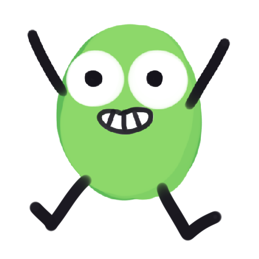
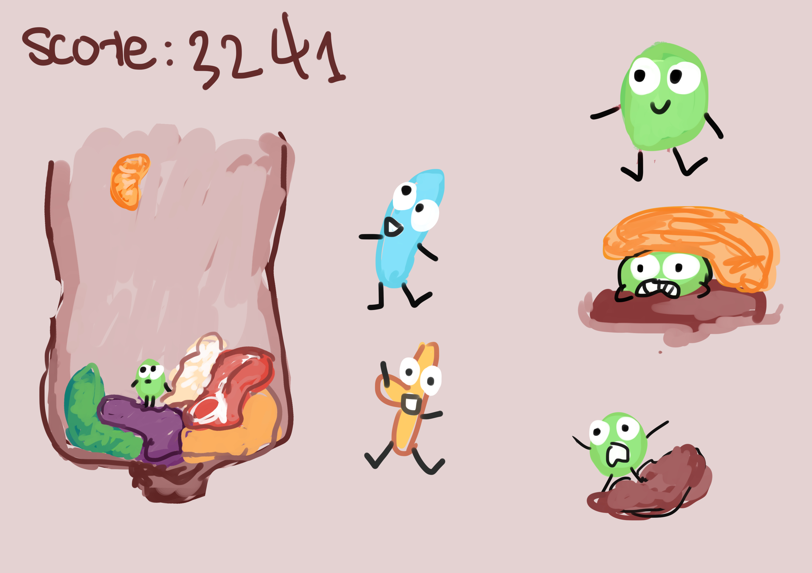
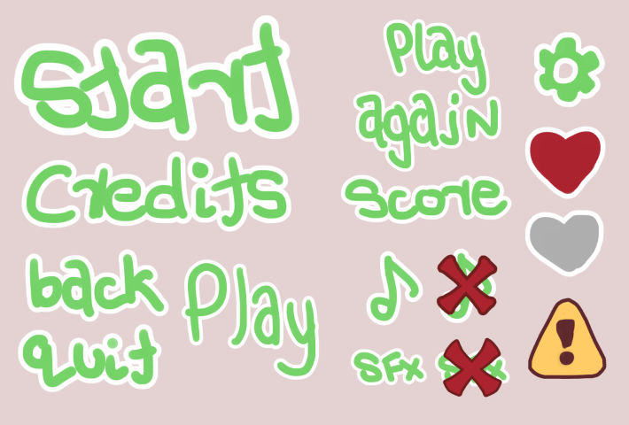
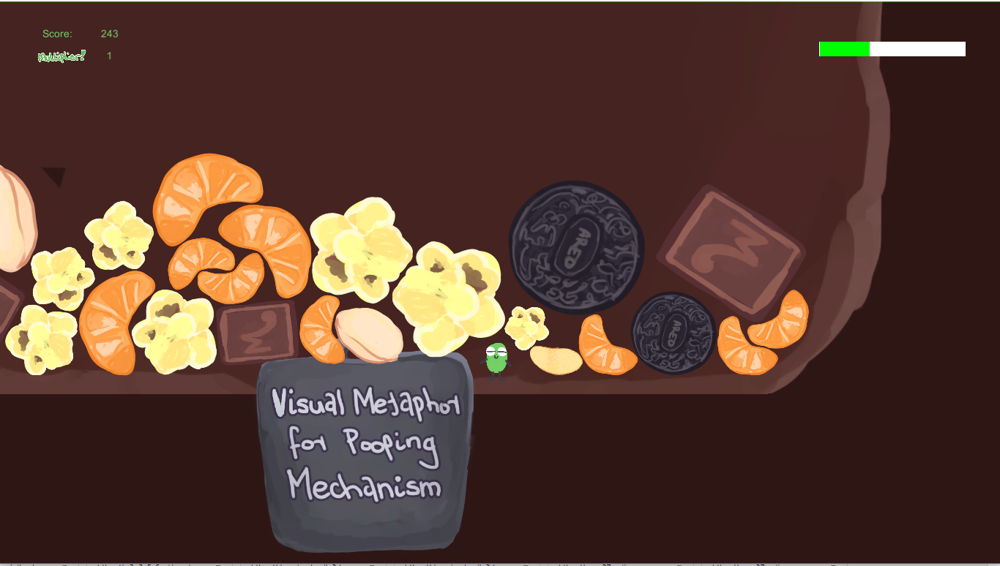

Project Overview
A 72 Hour Game Jam mit einer online Gruppe von Programmierern und Künstlern. Das Thema war, "Nicht Genug Platz".
 to Game Page To Ludum Dare PageDevelopment
- Als Team Ideen gepitcht. Für dieses Spiel, entschieden wir uns für eine Darmbakterien.
- Als 2D Artist, war ich für das ganze Ästhetik des Spiels verantwortlich, von Spiel Sprites bis UI and Logo.
- Durch die Herstellung von simplen Assets und genaue Kommunikation wurde das Spiel rechtzeitig fertig entwickelt.


